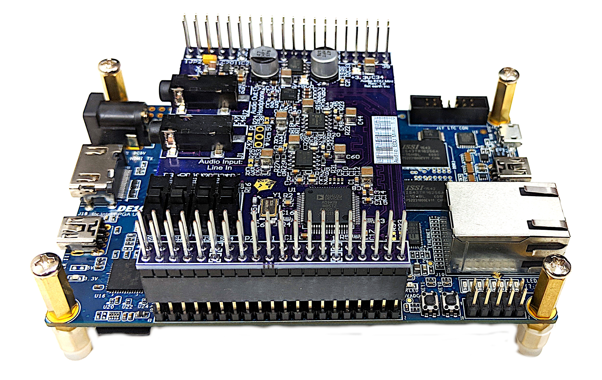

https://tvannoy.github.io/EELE467-SoC-FPGA-applications-lecture
Where are we going?
This semester
- boot/configure FPGA via NFS
- write a Linux device driver for LED state machine
Next semester
- focus on computatoinal application specific custom hw/sw
- create custom audio filter for audio daughter card 
Applications
Some ideas
Data center
- ML, netural networks, etc.
- workloads change over time
- FPGA fabric can be reconfigured on-the-fly for workload
Drones
- need a processor for control/communication
- FPGA fabric can be used to accelerate computer vision
Waterfall sorting
- GBps of camera data being processed in real-time
- SoC used for high-level control/interface
Project Brainwave
- Microsoft is putting regular FPGAs in their data centers to speed up AI for Bing/Azure
- has achieved up to 39.5 TFLOPS!
https://www.microsoft.com/en-us/research/project/project-brainwave/ https://www.intel.com/content/dam/www/public/us/en/documents/white-papers/accelerating-artificial-intelligence-bing-whitepaper.pdf
Potential Architecture
Computational Assistive Hearing
- hearing loss sucks!
- computational ability in hearing aids is limited
- use microphone arrays and SoC FPGAs to solve the cocktail party problem
Cocktail Party Problem

Cocktail Party Problem
Spatial Filtering
Icons made by Freepik from www.flaticon.com is licensed by CC 3.0 BY
Spatial Filtering
Icons made by Freepik from www.flaticon.com is licensed by CC 3.0 BY
Architecture
SoC
- allow users to select sources and steer the beamformer
- recieve/send data from/to a smartphone interface
- host a webpage interface
FPGA
- microphone array data capture
- beamforming calculations
- audio streaming